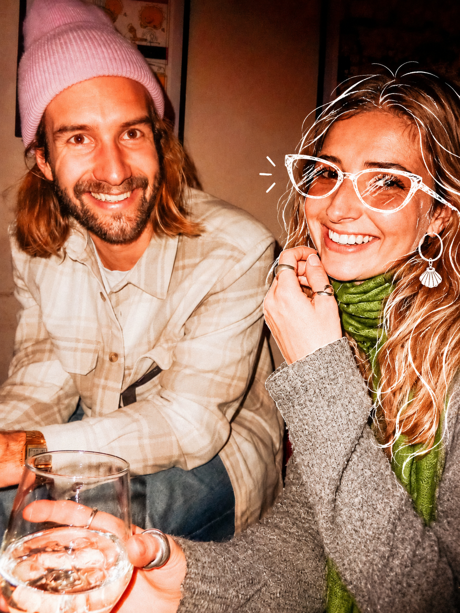

hast dich von meinem kompliment schon erholt? Mashallah, deine Augen leuchten heller als die Sterne am Himmel. Aber du strahlst von innen, und das imponiert mir!

und weil du gefragt hast, wie es mir geht - weiß jetzt ned, ob das einfach so lückenfüller war oder ob ich mich komisch verhalten hab. vor ein paar tagen, am morgen, war ich an der kaffeemaschine, aleks, helen und du habt gerade gefrühstückt/gebrunched... aber in dem moment hast du genau ins schwarze getroffen.
mir ist es in erinnerung geblieben, weil ich so baffeld da stand.. ich hab pseudo produktiv ein backup von meinem pc gemacht und dabei sortiere ich auch immer meine bilder grob in alben.. und da hab ich ein bild von einem gipfelbucheintrag aus 2025 gesehen.. das war letztes jahr mein mittel, meine trennung zu verarbeiten. bei den ersten waren es noch immer kleine lobeshymnen auf melissa und dass ich sie zurückhaben will. danach waren es eher kritischere tagebucheinträge. das bild hat den abschiedsmoment dokumentiert, als mir klar war, dass es weitergeht. das jahr war bis dahin super busy und ich hab mir nie wirklich zeit genommen, um zu sehen, wo ich stehe. selbst am wochenende, als ich flach lag, hab ich es geschafft, mich erfolgreich durch youtube-dokus von meinen gedanken abzulenken, aber an dem morgen war ich tatsächlich seit langem mal wieder schwer mit meinen gedanken beschäftigt.
schau tatsächlich mittlerweile ungern bilder an, zum einen, weil ich einfach nicht so ein eitler gen-z zipfel bin, der gleich alles bewerten muss (mein haaransatz macht mir eh schon sorgen 😅), ABER zum anderen, weil ich keinen bock hab auf mein trauriges gesicht, weil ich daran merke, etwas stimmt nicht.. jetzt wirds kinda deep?!
doch bevor ich jetzt mein zeug ablade (sorry), obwohl du auch eine bombe beim abendessen gedroppt hast... und ich einfach mal nicht reagiert hab. 🫠 mitten am tisch, ihr hattet schon was getrunken, kenn die hintergründe nicht und auch wenig von deiner beziehung im allgemeinen, deswegen hab ich es einfach mal unkommentiert gelassen - um die stimmung zu bewahren.
aber tut mir natürlich leid.. sowohl meine kalte reaktion - ich hätte dich schon auch gerne gedrückt und mitgefühl gespendet - aber viel wichtiger auch die trennung.
weiß jetzt auch gar ned, wo du die nächsten tage bist, ich denke, du hast genügend leute in deinem umfeld. trotzdem das angebot: wenn du keinen bock hast, allein zu sein, hit me up. glaube zwar schon auch, dass das alleinsein wichtig ist, um anständig zu verarbeiten und auch was aus der situation mitzunehmen, aber mach ma uns nix vor, is schwer am anfang.
ich seh zwar schon auch, dass du nicht ganz konsistent mit deinen karrierewegen bist, aber den aktuellen find ich doch schon auch sehr cool. ich drück dir die daumen für die ernährungsberatungsfortbildung. und dass du das in kombination mit der naturresilienz off the ground bekommst.
ich glaub, wir haben schon mal drüber gesprochen, bin schon der meinung, liebe ist arbeit und es lohnt sich zu kämpfen.. ohne euch zu kennen, will ich dir damit vllt mut machen. zumindest für mich als außenstehenden hat es nämlich schon so gewirkt, dass du - es waren auch zweifel dabei - aber doch sehr emphatisch über ihn berichtet hast und jedes mal gestärkt und positiv hier warst, als du aus salzburg kamst. war echt überrascht, es zu hören.
bzgl. alleinsein und sich zeit nehmen, es zu verarbeiten.. man muss es vllt nicht so extrem angehen wie ich, aber folgender gedanke ist mir grad beim putzen gekommen und ist, glaub ich, die quintessenz dessen, was ich erreichen wollte... random, aber mir gefällt der vergleich: beim wg-casting sollte man eigentlich nicht nach wg-erfahrung fragen, sondern: hast du schon mal alleine gewohnt? bei uns ist alles kaputt, weil keine ownership herrscht oder jeder meint, er macht alles richtig, aber hat gar keine validierung, weil ihm sein eigenes handeln nicht 3 wochen später beim nächsten putzen auf die füße fällt. und beim dating vermutlich eher: warst du schon mal single? weißt du, wer du alleine bist und was deine ziele sind? verkrüppeln da fähigkeiten wie kompromissbereitschaft, (evtl kommunikation) und sexualität? ich mein, sexualität bekommt man meiner erfahrung nach meistens in den griff, wenn man nicht gleich von anfang an aufgibt und die chemie stimmt. eine eigene persönlichkeit bildet man nicht mehr aus in der beziehung. heißt, man weiß nix allein anzufangen usw. damit sind das die fähigkeiten, die wichtig sind und zu suchen sind. ob man jetzt schon 20 beziehungen hatte und keinen tag single war, ist gar nicht relevant - kann man alleine situationen meistern, ohne sich sofort hilfeschreiend an familie oder freunde zu wenden? wenn das vorhanden ist, ist es in einer beziehung 100mal schöner, wenn man erlebnisse teilen kann, füreinander da sein kann und eine mentale unterstützung darstellt.
letztes jahr war, glaub ich, so rückblickend mein jahr, in dem ich so much independence gained hab wie nie. einfach eines meiner besten jahre, die ich hatte, und ich führe es auf die lernkurve des single-seins zurück.
naja, und jetzt zurück zur frage...
warum jetzt ausgerechnet du das lesen musst, weiß ich noch nicht genau, aber bei dir hatte ich mich von anfang an schon geborgen gefühlt, um offen zu sprechen, weil ich denke, bei dir ist es gut aufgehoben :D beim essen haben wir über accountability gesprochen. schau, ich führ die gespräche oft für mich, aber irgendwie hab ich am ersten abend angefangen, die gedanken wieder aufzuschreiben und jetzt sogar zu verarbeiten. ich denke, es lag an dir, warum auch immer … stop the gatekeep. nur wer sich verletzlich zeigt, spürt auch emotionen bei erfolg „Courage: The Joy of Living Dangerously“.
ohne jetzt jede kleine geschichte daherzujappen ... aktuell: man hat 3 bereiche im leben, oder.. beziehung, freundeskreis, beruf (berufung)
ich hatte so den insgeheimen plan, dass ich nach südafrika noch meine thesis verteidige und mit dem zeugnis in der tasche direkt in mein auto steige und in marokko beim surfen überwintere. dann hab ich mir die rippe geprellt, bin dort die letzten 2 monate beim surfen ausgefallen, zuhause direkt nochmal einen monat voll im uni-stress gelandet und meine atmung ist auch nur langsam besser geworden. somit hab ich irgendwie meine surfer gains verloren und schon etwas an motivation. dann bin ich hier angekommen und hab mich erstmal fremd gefühlt, weil der anschluss an die studienkollegen über die vorlesungen nicht mehr gegeben ist und ich eigentlich nur noch entweder mit leuten zuhause kontakt hab oder eben mit euch über aleks oder conny anschluss suche. vor 2 wochen hab ich dann so für mich beschlossen: wieder schnell weiterreisen fühlt sich nicht richtig an, weil einfach zu schnell aufeinander. damit renn ich vor innsbruck und dem winter weg und der challenge, hier anschluss zu finden.
so in der zwischenzeit bin ich aber mit dem job unzufrieden geworden, weil die einfach keine schneid haben.. alle super nett, aber so typischer konzern, wo man sich halt immer ned so recht anstrengen muss und auch nicht so richtig an der umsetzung von kreativen ideen interessiert ist. so ist die motivation der ersten wochen direkt wieder verpufft.
wohnen ... müssen wir drüber reden?! richtig madig mit den zwei grad. ich bin so super froh, dass ich noch die verteidigung vorbereiten muss und auch min. 3 tage die woche physisch in die arbeit geh.. ansonsten könnte ich das nicht. die conny ist definitiv ein mensch, mit dem ich nicht mehr freiwillig zusammenwohnen möchte. ich hasse personen, die keine reflektierte wahrnehmung haben und deren blinder fleck so groß ist. mittlerweile vermute ich auch, das ist krankhaft, wie die versucht, alles zu ihren gunsten zu steuern, ohne dass sie checkt, dass sie zu viele fäden in der hand hält und vermutlich selbst schon von den lügen mental erdrückt wird.. naja, wir werden anmaßend. auf jeden fall aleks und sie - die aura in der wohnung lässt dich nicht aufblühen. :D
all in all hab ich realisiert, dass die leichtigkeit von früher weg ist.. so alles scheint kompliziert, auch wenn man was spontan macht... da merkt man schon, dass man erwachsen wird, und offen gesagt, darauf hat man ja hingearbeitet: erstes auto kaufen, ausziehen, erste eigene wohnung beziehen, erste versicherung abschließen, alleine verreisen usw. das waren alles mal erstrebenswerte ziele und quellen von stolz. aber da war schon lang nix mehr und so langsam creept sich so das gefühl von stuck sein ein.
immer schwerer, die pure freude zu finden.. in den flowstate zu kommen bzw. ist er störanfälliger. manchmal hat schon ein guter lauf ausgereicht, beim skifahren und bike&hike war es eigentlich garantiert. der karwendel- und padua-trip waren ganz schön flach emotional, hab erst realisiert, was abging, als ich neulich die bilder angeschaut hab und sowas wie freude empfunden hab. es war echt wie im nebel verschwunden und als hätte ich es gerusht, ohne es wahrzunehmen. bisschen schuld ist sicher meine social media addiction for sure. als kompensation für action mit gleichgesinnten. ich sag addiction, weil es wirklich so eine ungesunde stimmung ist, dass ich mich nicht inspirieren lasse oder nur 5 minuten, aber das schnell in hass umschlägt, ohne dass ich es checke.
auch so die liebe. meine letzte beziehung ist mit silvester 24/25 beendet gewesen, damit hab ich mir auf die vorsatz-liste geschrieben: ich will zeit für mich haben, um zu sehen, wer ich bin. ich hab realisiert, dass ich nämlich immer ein enabler für die ziele anderer war und mir das viel energie gibt. aber mit der letzten beziehung hat sich das so angefühlt, als würde mich das aussaugen - und dann stand ich da ohne enge freunde, die eine mission hatten, und ich wusste nicht so recht, was mir freude bereitet. aus dem halben jahr wurde ein jahr - bewusst, weil ich gesehen hab, was ich alles erreicht und erlebt und gemacht hab - ein jahr voller microadventures. danach war uni-stress angesagt, weil ich südafrika in aussicht hatte, und dann war da südafrika selbst, wo auch bis auf einen kleinen flirt nichts war.
und jetzt bin ich hier und hab nach fast 2 jahren etwas die angst, beim daten zu versagen. oder halt zweifel, ob ich verlernt hab, wie es geht - ich war nie aktiver player, aber ich hatte immer das bewusstsein, dass, wenn ich was wirklich wollte, ich das hinbekommen hab. und da kommt noch dazu: ich hab halt so stark gelernt, mir die zeit einfach selbst schön zu machen, dass ich direkt overthinke und kompatibilität in frage stelle. ich denke, ich hab dabei tatsächlich verlernt, gut zu kommunizieren - was nie meine stärke war. und oh boi hatt ich nach südafrika den druck nach körperlicher nähe, das war so hart und dominant, zum glück auch schnell wieder verschwunden. ich bilde mir ein, ich lerne dazu, aber ich wende es halt nicht an, also ist es ein trugschluss.
angst, meine vision von mir aufzugeben, aber sehe auch, wie schwierig es sein wird, noch das gleiche zu finden.. nicht mehr so einfach, hab hier ja einige kontakte, aber es fühlt sich alles nicht mehr so leicht an
nunja, jetzt bist du im bild - absoluter limbo. ich hab so einen adventure-5-jahresplan for sure, aber sonst so wenig, worauf man hinarbeiten kann. ich bin spontan und muss auch nix verplanen, das ist ned so ernst zu nehmen wie „wo siehst du dich in 5 jahren“ in einem bewerbungsgespräch, aber ohne ein ziel, auf das man hinarbeitet, kann man sich halt auch verlieren. aber die motivation ist so schwer wie nie.. obwohl objektiv vieles so einfach scheint wie nie, ich hab das studium rum, ich hab einen lässigen job, ich bin gesund und unabhängig.
von außen eh vieles lässig, innen fühlt’s sich nur noch ned ganz so an. wollte dir die frage vom frühstück einfach mal ehrlich beantworten. und ich glaub, bei dir kann ich das. musst da jetzt auch nix lösen.